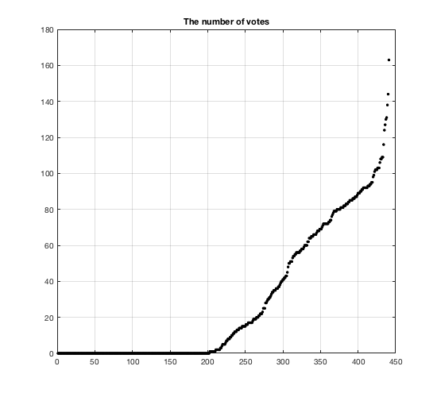
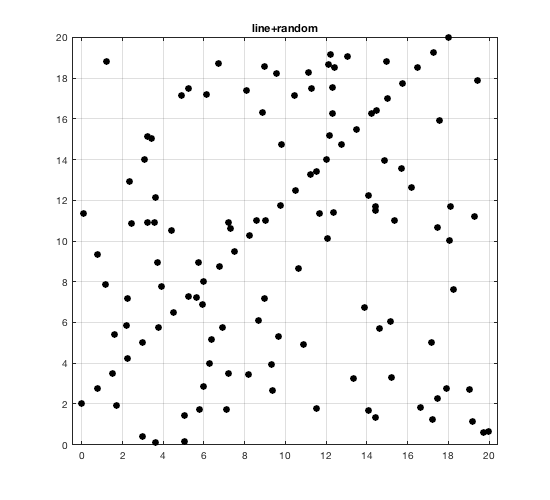
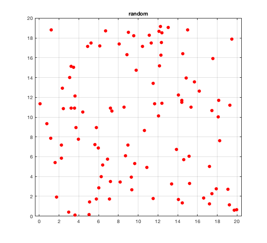
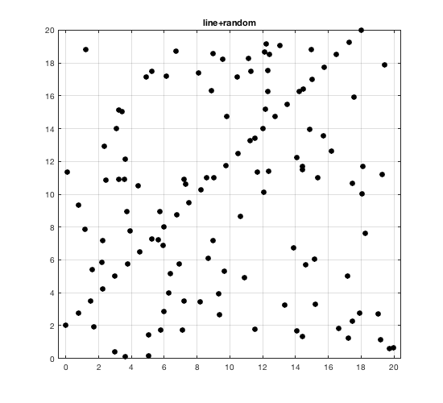
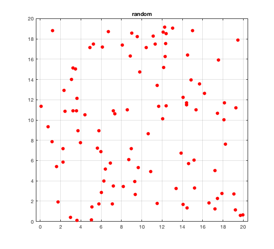

MATLAB programming course for beginners, supported by Wagatsuma Lab@Kyutech
/* The MIT License (MIT): Copyright (c) 2021 Hiroaki Wagatsuma and Wagatsuma Lab@Kyutech
Permission is hereby granted, free of charge, to any person obtaining a copy of this software and associated documentation files (the "Software"), to deal in the Software without restriction, including without limitation the rights to use, copy, modify, merge, publish, distribute, sublicense, and/or sell copies of the Software, and to permit persons to whom the Software is furnished to do so, subject to the following conditions:
The above copyright notice and this permission notice shall be included in all copies or substantial portions of the Software.
THE SOFTWARE IS PROVIDED "AS IS", WITHOUT WARRANTY OF ANY KIND, EXPRESS OR IMPLIED, INCLUDING BUT NOT LIMITED TO THE WARRANTIES OF MERCHANTABILITY, FITNESS FOR A PARTICULAR PURPOSE AND NONINFRINGEMENT. IN NO EVENT SHALL THE AUTHORS OR COPYRIGHT HOLDERS BE LIABLE FOR ANY CLAIM, DAMAGES OR OTHER LIABILITY, WHETHER IN AN ACTION OF CONTRACT, TORT OR OTHERWISE, ARISING FROM, OUT OF OR IN CONNECTION WITH THE SOFTWARE OR THE USE OR OTHER DEALINGS IN THE SOFTWARE. */
Contents
Specifications and requirements
- @Time : 2021-5-26
- @Author : Hiroaki Wagatsuma
- @Site : https://github.com/hirowgit/1B1_matlab_signal_analysis_course
- @IDE : MATLAB R2018a
- @File : lec2D_A1_lineHough_Copper.m
Main program
clear all
a=1; b=2; % dT=0.25; dT=0.75; rdN=100; dN=100; % dNs=100; dNs=20; t=0:pi/dN:pi; gridP=0:dNs; figSize=[550 500]; sPx=500; sPy=900; figNx=3; figNy=2; rangeXY=[0 20; 0 20]; %[xmin, xmax; ymin, ymax]; labelF={'line','random','line+random','hough trans. for line','discrete vote','voting contour map','The number of votes'}; fignum=1; flagNoiseOn=true; % if you test the noise condition % flagNoiseOn=false; % if you test without-noise condition x=0:dT:rangeXY(1,2); lgen=@(x) a*x+b; figure(fignum); clf figPn=mod(fignum,figNx*figNy); set(fignum,'name',labelF{fignum},'Position',[figSize(1)*(mod(figPn-1,figNx))+sPx sPy-figSize(2)*floor((figPn-1)./figNx) figSize]); plot(x,lgen(x),'b.','MarkerSize',24); title(labelF{fignum}); grid on; axis equal; fignum=fignum+1; rdPos=repmat(diff(rangeXY'),[rdN 1]).*rand(rdN,2)+repmat(rangeXY(:,1)',[rdN 1]); figure(fignum); clf figPn=mod(fignum-1,figNx*figNy)+1; set(fignum,'name',labelF{fignum},'Position',[figSize(1)*(mod(figPn-1,figNx))+sPx sPy-figSize(2)*floor((figPn-1)./figNx) figSize]); plot(rdPos(:,1),rdPos(:,2),'r.','MarkerSize',24); set(gca,'xlim',rangeXY(1,:),'ylim',rangeXY(2,:)); title(labelF{fignum}); grid on; axis equal; fignum=fignum+1; if flagNoiseOn mD=[x',lgen(x'); rdPos]; else mD=[x',lgen(x'); ]; end figure(fignum); clf figPn=mod(fignum-1,figNx*figNy)+1; set(fignum,'name',strrep(labelF{fignum},'+','_'),'Position',[figSize(1)*(mod(figPn-1,figNx))+sPx sPy-figSize(2)*floor((figPn-1)./figNx) figSize]); plot(mD(:,1),mD(:,2),'k.','MarkerSize',24); set(gca,'xlim',rangeXY(1,:),'ylim',rangeXY(2,:)); title(labelF{fignum}); grid on; axis equal; fignum=fignum+1; houghLD=repmat(mD(:,1)',[size(t,2) 1]).*repmat(cos(t'),[1 size(mD,1)])+repmat(mD(:,2)',[size(t,2) 1]).*repmat(sin(t'),[1 size(mD,1)]); thetaD=repmat((t'),[1 size(mD,1)]); mD2=[thetaD(:) houghLD(:)]; voteD=[]; voteD(:,1)=floor(dNs.*(mD2(:,1)-min(mD2(:,1)))./(max(mD2(:,1))-min(mD2(:,1))))+1; voteD(:,2)=floor(dNs.*(mD2(:,2)-min(mD2(:,2)))./(max(mD2(:,2))-min(mD2(:,2))))+1; countD=zeros(dNs+1,dNs+1); for i=1:size(voteD,1) countD(voteD(i,2),voteD(i,1))=countD(voteD(i,2),voteD(i,1))+1; end grX=((max(mD2(:,1))-min(mD2(:,1))).*(gridP)./dNs)+min(mD2(:,1)); grY=((max(mD2(:,2))-min(mD2(:,2))).*(gridP)./dNs)+min(mD2(:,2)); grXP=repmat(grX,[dNs+1 1]); grYP=repmat(grY',[1 dNs+1]); figure(fignum); clf labelF2=strrep(labelF{fignum},'.',''); labelF2=strrep(labelF2,' ','_'); figPn=mod(fignum-1,figNx*figNy)+1; set(fignum,'name',labelF2,'Position',[figSize(1)*(mod(figPn-1,figNx))+sPx sPy-figSize(2)*floor((figPn-1)./figNx) figSize]); plot(mD2(:,1),mD2(:,2),'k.'); xtickpoint=0:pi/4:2*pi; xlabel={'0','\pi/4','\pi/2','3\pi/4','\pi','5\pi/4','3\pi/2','7\pi/4','2\pi'}; set(gca,'xtick',xtickpoint,'xticklabel',xlabel) title(labelF{fignum}); grid on; fignum=fignum+1; figure(fignum); clf labelF2=strrep(labelF{fignum},'.',''); labelF2=strrep(labelF2,' ','_'); figPn=mod(fignum-1,figNx*figNy)+1; set(fignum,'name',labelF2,'Position',[figSize(1)*(mod(figPn-1,figNx))+sPx sPy-figSize(2)*floor((figPn-1)./figNx) figSize]); plot(voteD(:,1),voteD(:,2),'k.'),hold on; contour(countD); % contourf(countD); xtickpoint=0:pi/4:2*pi; title(labelF{fignum}); grid on; fignum=fignum+1; figure(fignum); clf labelF2=strrep(labelF{fignum},'.',''); labelF2=strrep(labelF2,' ','_'); figPn=mod(fignum-1,figNx*figNy)+1; set(fignum,'name',labelF2,'Position',[figSize(1)*(mod(figPn-1,figNx))+sPx sPy-figSize(2)*floor((figPn-1)./figNx) figSize]); contour3(grXP,grYP,countD,50,'lineWidth',3); set(gca,'xtick',xtickpoint,'xticklabel',xlabel) title(labelF{fignum}); grid on; fignum=fignum+1; figure(fignum); clf labelF2=strrep(labelF{fignum},'.',''); labelF2=strrep(labelF2,' ','_'); figPn=mod(fignum-1,figNx*figNy)+1; set(fignum,'name',labelF2,'Position',[figSize(1)*(mod(figPn-1,figNx))+sPx sPy-figSize(2)*floor((figPn-1)./figNx) figSize]); plot(sort(countD(:)),'k.','MarkerSize',10); title(labelF{fignum}); grid on; fignum=fignum+1; if flagNoiseOn datafname='lineHough_with_Noise'; else datafname='lineHough_without_Noise'; end save_fig;
  
 